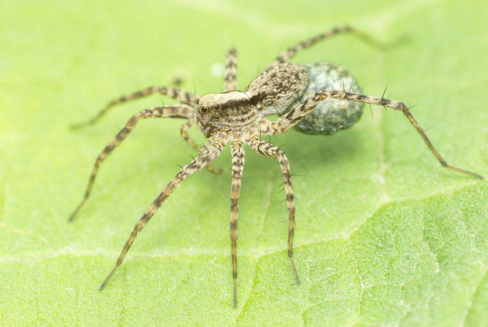

Minden póknak nyolc lába van. Szemük egyszerű (nem összetett), ezért a legtöbbjük csak a sötét/világos átmenetet képes megkülönböztetni.
A pókok tapogatókkal is rendelkeznek, melyek a táplálék elfogyasztásában segíti őket.
Ez több fajnál is módosuláson esik át, és az így a kialakuló fajspecifikus szerv a párzásban is fontos szerepet tölt be.
Mivel nem rendelkeznek antennával, az ingerek felvételére a lábaikon lévő sörtéket használják.
Ezek az ingerek lehetnek hangok, rezgések, és a légmozgásból adódó apró nyomásingadozások is.
A pókok az elejtett zsákmányt nem tudják megrágni. Ehelyett, mint a legtöbb pókszabású, a préda elfolyósított szöveteit szívják fel. Képesek elfogyasztani a saját selymüket is.
